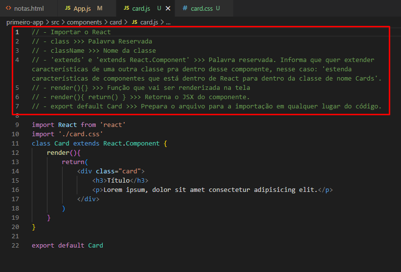
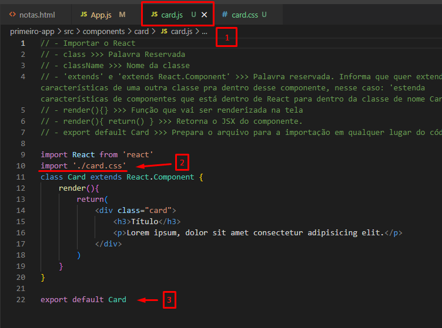

ANATOMIA DE UMA CLASSE

Depois de definir todo o conteúdo do seu componente, siga os passos abaixo:

- [1] - Atenção em onde o arquivo foi escrito.
- [2] - Crie um arquivo .css para a estilização do componente.
OBS: Não esqueça de importar o arquivo .css (que não precisa do from) no próprio arquivo do componente (card.js) e não esqueça de adicionar a classe na propria tag do componente.
- [3] - Lembre-se de exportar o arquivo do componente pra que ele possa ser usado em todo o código.